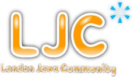
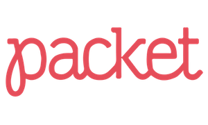

Sponsors
The AdoptOpenJDK Foundation is proud to receive contributions from many companies, both in the form of monetary contributions in exchange for membership or in-kind contributions for required resources.
We are currently looking for the following infrastructure:
Multiple build and test servers across various platforms that have significant CPU and memory. This will be used to quickly and continuously build and test multiple versions of OpenJDK.
Tier-1 Sponsors
The AdoptOpenJDK Foundation's Tier-1 infrastructure providers contribute the largest share of infrastructure to the Adopt OpenJDK build farm project. Without these companies, the project would not be able to provide the quality, speed and availability of test coverage that it does today. (Listed alphabetically).
|  |
The London Java Community (LJC) is a group of Java enthusiasts who are interested in benefiting from shared knowledge in the industry. Through our forum and regular meetings developers can keep in touch with the latest industry developments, learn new Java (& other JVM) technologies, meet other developers, discuss technical/non technical issues and network further throughout the Java Community.
The LJC has over 6000 members and holds a seat on the Executive Committee of the Java Community Process (JCP) - aka the Java standards body. The LJC is a leading member in both the Adopt a JSR and Adopt OpenJDK programmes to contribute to Java standards and the leading implementations behind those standards. |
Tier-2 Sponsors
The AdoptOpenJDK Foundation's Tier-2 infrastructure providers fill essential gaps in architecture and operating system variations and shoulder some of the burden from the tier-1 providers, contributing to availability and speed in our CI system. (Listed alphabetically).
 |
|
| MacStadium is the leading managed Mac hosting solution in the world offering individuals and organizations of all sizes to colocate and rent dedicated Mac servers and Mac private cloud environments hosted in data centers around the world. We’re an experienced, driven team of technology enthusiasts striving to provide the best Mac hosting experience to all users. If you need a couple of Mac build servers, you can rent a Mac mini or Mac Pro. For many folks, including AdoptOpenJDK, this is a great route. For others interested in paying a bit more for automation and scalability, see Mac Private Cloud. | |
|  | Packet is passionate about building a better internet. Our specialty is automating fundamental infrastructure. With premium Intel and ARMv8 based server configurations that provision in 8 minutes or less, the Packet platform brings the promise of the virtualized cloud to bare metal - offering the ultimate in performance, portability, and scalability for modern workloads. The company also operates an advanced software defined network and offers private deployments for enterprise customers. Packet currently serves a global client base from data centers in Parsippany (NJ), Sunnyvale (CA), Amsterdam (NL) and Tokyo (JP). |
| Scaleway is a pioneer in the BareMetal cloud computing industry. Created in 2015, Scaleway is the sole cloud provider worldwide to provide on-demand BareMetal servers designed by their own engineering teams. All their components are carefully selected to always provide the most reliable and cost-effective solutions. Scaleway now offers a full range of Compute, Storage and Networking services for infrastructure of all sizes, from development platform to large-scale mission-critical deployments. For more information, visit scaleway.com. |
Supporting Services
(Listed alphabetically)
 |